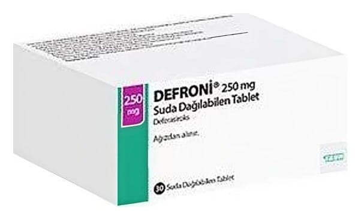

Defroni 250 mg Suda Dağilabilen Tablet , 30 Adet

Ne için kullanılır
KT · Bölüm 1DEFRONİ, beyaz ya da beyaza yakın, yuvarlak, kenarı eğimli, bir tarafında 77, diğer tarafında ise 439 baskısı olan düz, suda dağılabilen tabletlerdir. Her bir suda dağılan tablet 250 mg deferasiroks içerir.
DEFRONİ tabletler 30 tablet içeren blister ambalajlarda sunulmaktadır.
Kan nakline bağlı aşırı demir yüklemesi (düzenli kan nakli alan hastalar): DEFRONİ kan naklinin sebep olduğu aşırı demir yüklemesinin tedavisinde kullanılır. Yetişkinlerin, gençlerin ve 2 yaş ve üzerindeki çocukların tedavisinde kullanılabilir.
DEFRONİ, vücuttaki demir fazlasını (aşırı demir yükü diye de adlandırılır) gideren demir bağlayıcı bir ilaçtır (demir şelatörü). DEFRONİ demiri bağlar ve büyük oranda dışkı yoluyla vücuttan atılmasını sağlar.
Talasemi, orak hücre anemisi ve myelodisplastik sendrom gibi bazı anemi (kansızlık) tipleri bulunan hastalarda tekrar tekrar kan nakli gerekebilir. Bununla birlikte, kan naklinin tekrarlanması aşırı demir birikimine sebep olabilmektedir. Bunun sebebi kanda demir bulunması ve vücudumuzun kan nakliyle alınan aşırı demiri vücuttan atmak için doğal bir yola sahip olmamasıdır.
Kan nakline bağlı olmayan talasemi sendromları (düzenli kan nakli almayan talasemi hastaları):
DEFRONİ, talasemi sendromlarıyla ilişkili demir yüklenmesi olan ancak kan nakli almayan hastaların tedavisi için kullanılır. Bu durumdaki yetişkinlerde, adölesanlarda ve 10 yaş ve üzeri çocuklarda kullanılabilir. Kan nakline bağlı olmayan talasemi sendromları olan hastalarda başlıca, düşük kan hücresi sayısına yanıt olarak besinle alınan demirin emilimindeki artış nedeniyle zaman içinde aşırı demir yüklenmesi gelişebilir. Düzenli kan nakli almayan talasemik hastalarda yüksek demir düzeyleri genellikle yalnızca 10 yaş ve üzeri hastalarda gözlenmektedir.
Zaman içerisinde, demir fazlası karaciğer ve kalp gibi önemli organlara zarar verebilir.
Demir fazlasını atmak ve organların zarar görme riskini azaltmak için demir şelatörü olarak adlandırılan ilaçlar kullanılır.
DEFRONİ’nin nasıl etki gösterdiği veya bu ilacın size neden reçete edildiği konusunda sorularınız varsa doktorunuza danışınız.